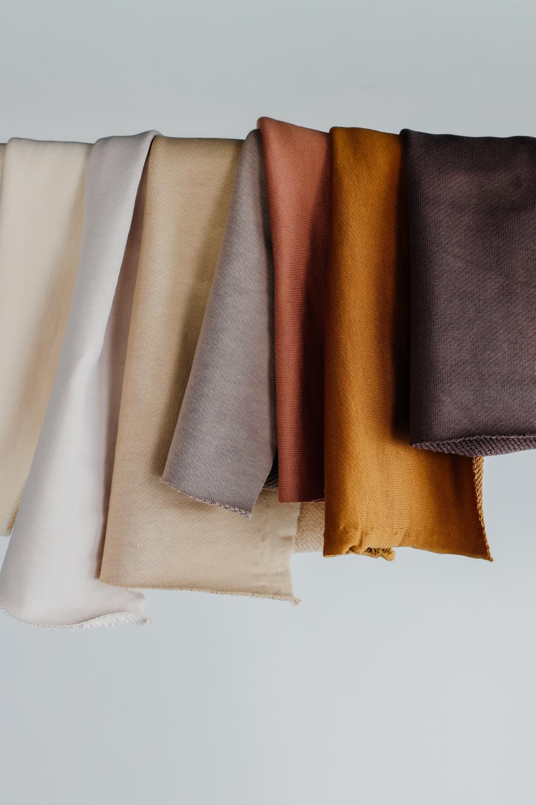

Kratko o nama

Čime se bavimo
Velvet Fabrics je firma iz Novog Sada koja se već deceniju bavi uvozom i veleprodajom pamučnih tkanina za tržište Srbije.
Specijalizovani smo za pamuk i premijum varijacije pamučnih materijala – uključujući modal, likru i njihove kombinacije. Ne bavimo se sintetikom, već isključivo prirodnim i kvalitetnim materijalima koji imaju primenu u ozbiljnoj proizvodnji odeće.
Naša roba dolazi direktno iz Turske, od proverenih proizvođača sa kojima sarađujemo godinama. Zahvaljujući tome, možemo da obezbedimo stabilan kvalitet i kontinuitet u ponudi, što je ključno za sve koji se bave proizvodnjom.
U ponudi imamo i materijale veće gramature, poput pamuka od 240g, koji su posebno traženi za kvalitetnije i dugotrajnije komade odeće.
Nalazimo se u Novom Sadu, gde u okviru našeg magacina imate mogućnost da tkanine pogledate uživo, uporedite i odaberete ono što vam najviše odgovara. Trudimo se da saradnja bude jednostavna, jasna i dugoročna.
Naše vrednosti
Principi kojima se vodimo u svakodnevnom poslovanju
Proveren kvalitet
Saradnju gradimo sa proizvođačima iz Turske koji imaju stabilan i ujednačen kvalitet. Materijali koje nudimo nisu deo masovne, nekontrolisane proizvodnje, već dolaze iz proverenih izvora na koje se možemo osloniti iz nabavke u nabavku.
Fokus na prirodne materijale
U ponudi imamo isključivo pamuk i premijum varijacije pamučnih tkanina, bez sintetike. Biramo materijale koji su prijatni za nošenje, dugotrajni i pogodni za ozbiljnu proizvodnju odeće.
Saradnja bez komplikacija
Radimo direktno sa kupcima i trudimo se da izbor materijala bude jednostavan i brz. Možete doći kod nas, pogledati tkanine uživo i dobiti konkretan savet — bez suvišne priče, fokusirano na ono što vam stvarno treba.
Kako radimo
Od vlakna do tkanine
Nabavka
Materijale nabavljamo direktno iz Turske, od proizvođača sa kojima imamo dugogodišnju saradnju. Fokus nam je na pouzdanim izvorima i ujednačenom kvalitetu, kako bi kupci mogli da računaju na kontinuitet u proizvodnji.
Izbor
Pre nego što uvrstimo tkaninu u ponudu, obraćamo pažnju na ono što je zaista bitno u praksi – osećaj materijala, pad, izdržljivost i ponašanje pri nošenju i održavanju. U ponudi su samo materijali koji zadovoljavaju naše kriterijume.
Ponuda
Asortiman je jasno definisan i fokusiran na pamuk i premijum varijacije pamučnih tkanina. Materijale grupišemo po sastavu, gramaturi i nameni, kako bi izbor bio jednostavan i brz.
Saradnja
Trudimo se da ceo proces bude jednostavan – od izbora materijala do realizacije porudžbine. Možete doći kod nas, pogledati tkanine uživo i dobiti konkretan savet u skladu sa vašim potrebama.